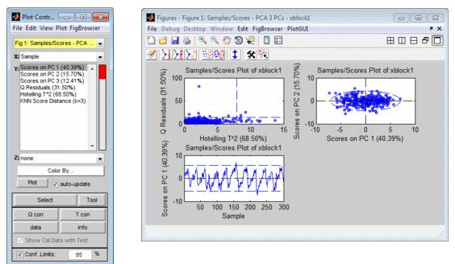
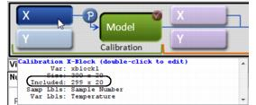

Table of Contents | Previous | Next
Plotting Scores and Statistical Values for a Calibration Model
For most analysis methods, the Analysis window toolbar contains a Plot scores and sample statistics button  . Scores are the coordinates of the samples in the new principal component or factor coordinate system. A Scores plot shows the relationship among the samples in plots that are displayed in a multiplot Figure window. The Plot Controls window lists the options that can be plotted. The options that are available for plotting depend on the analysis that was carried out (for example, see Sample Classification Predictions.) To change the information that is plotted, select a different X value, a different Y value, or both in the Plot Controls window. The figure below shows some of the possible Scores plots for a PCA analysis in which three principal components were retained.
. Scores are the coordinates of the samples in the new principal component or factor coordinate system. A Scores plot shows the relationship among the samples in plots that are displayed in a multiplot Figure window. The Plot Controls window lists the options that can be plotted. The options that are available for plotting depend on the analysis that was carried out (for example, see Sample Classification Predictions.) To change the information that is plotted, select a different X value, a different Y value, or both in the Plot Controls window. The figure below shows some of the possible Scores plots for a PCA analysis in which three principal components were retained.
- Possible Scores plots for a PCA analysis in which three principal components were retained
- 
Note: For information about the Plot Controls window and Plot window, see Plot Controls Window.
Options are available for changing the plot display and for examining and refining the model by excluding certain samples and/or variables to enhance the model performance. See:
Changing the plot display
Note: The examples listed here are not meant to be an exhaustive list of all of the available Plot Controls options for changing a Scores plot display. Instead, it is simply to provide representative examples of some of the more commonly used options when building a model.
- You can select an individual Y metric to plot, or you can CTRL-click to select multiple Y metrics to plot.
|
- You can double-click on a plot in the multiplot Figure window to open the plot in its own Figure window, or you can select the plot in the multiplot Figure window, and on the Plot Controls window, click View > Subplots.
|
- You can view the labels or classes that are associated with the samples in your original data. On the Plot Controls window menu, click View > Labels or View > Classes.
|
- You can overlay Sample IDs/numbers on a plot. On the Plot Controls menu, click View > Numbers.
|
- You can declutter a plot for easier viewing if you have Sample IDs/numbers displayed on a plot. On the main menu on the Plot Controls dialog box, click View > Declutter Labels, and then select a Declutter level.
|
- Note: The phrase "Decluttered" appears in the lower left hand corner of a decluttered plot.
- You can change the confidence level for a plot. In the Plot Controls dialog box, ensure that Conf. Limits is selected and in the Confidence Limit field, enter a new value for the confidence limit. (The default value is 95%.)
|
- Note: Confidence Limits for PC versus PC plots are indicated by either a straight dashed line or an ellipse around the plotted data. As you change the value for the Confidence Limit, line moves in position or the ellipse expands or contracts in size accordingly. Data points that are inside the line or the ellipse, therefore, fall within the specified confidence limits. Conversely, data points that are outside the line or the ellipse exceed the specified confidence limits.
- For many factor-based models, you can view the Hotelling's T-squared and Q residuals contributions (T contribution and Q contributions) using the Qcon and Tcon buttons located on the Plot Controls dialog. See the T-Squared Q residuals and Contributions page for more information about these statistics.
Refining the model by excluding samples
Typically, when using Scores plots to refine a model, you identify samples that you consider to be unusual for the plotted data and then carry out a series of steps to determine whether to include the samples in the model, or to exclude the samples from the model.
Note: Typically, if you want to refine a model by removing variables, you use the information in a Loads plot. See Plotting Loads and Variable Statistics for a Calibration Model.
Note: The examples listed here are not meant to be an exhaustive list of all of the available Plot Controls options for refining a model using a Scores plot. Instead, it is simply to provide representative examples of some of the more commonly used options when building a model.
| 1.
|
Initially, you can do one or more of the following to review your samples, and determine which samples, if any, require further investigation:
|
- On the Plot Controls window, click Info, and then click on a sample in the plot to open a dialog box that displays information about the sample, such as its Q residual value and its T^2 value.
|
- On the Plot Controls window, click T con, and then drag your cursor around a sample in the plot to open the T^2 Contributions dialog box. This dialog box shows the contribution of each variable that was measured for the sample to the T^2 value.
|
- On the Plot Controls window, click Q con, and then drag your cursor around a sample in the plot to open the Q Residuals Contributions dialog box. This dialog box shows the contribution of each variable that was measured for the sample to the Q Residual value.
|
- On the Plot Controls window, click Data to generate a plot that shows the trend or response of the selected samples for all variables.
|
- Double-click on a variable in a Q con and or T con plot to generate a separate trend plot for the variable.
|
| 2.
|
For samples that you have determined require further investigation, you can do the following:
|
- On the Plot Controls dialog box, click Tools, and then select your tool of choice. (You can also click the Choose Selection Tool icon
 and then select your tool of choice.) and then select your tool of choice.)
|
- Note: "Lasso" is the most flexible tool for selecting samples.
- On the Plot Controls dialog box, click Make Selection, and then click and drag your cursor around the samples to select them. (You can also click the Make Selection icon
 and then click and drag your cursor around the samples to select them.) and then click and drag your cursor around the samples to select them.)
|
- The color of the selected samples is changed, not only in the currently active plot, but also, in any other open plots that contain the samples.
| 3.
|
With the selected samples now highlighted in the plot, you can do one or more of the following to place the focus on the selected samples and glean further information about the selected samples before deciding to include them or exclude them for the model:
|
- To remember what indices correspond to a specific group of selected samples, on the Plot Controls window main menu, click File > Save Selected Indices, and at the prompt, provide a file name for the saved indices. The selected indices are saved as an item in your Workspace Browser. You can double-click this icon to open a read-only Data Editor window that shows that samples that you selected and the rows from which the samples came. To view the saved indices in a Scores plot, on the Plot Controls window main menu, click File > Load Selected Indices.
|
- To display the sample labels or sample numbers/IDs next to the selected samples, on the Plot Controls window main menu, click View > Labels, or click View > Numbers accordingly.
|
- Plot the Q Residuals for the DataSet versus the T^2 values for the dataset and note where the selected samples fall in the plot. If in this plot you notice additional samples that seem to be unusual (for example, a sample that has a high Q residual value but a low T^2 value), you can select these samples as well. (These additional samples are referred to as the "new" samples in the next two options.)
|
- To add the new samples to the currently selected samples, hold down the Shift key, click Select on the Plot Controls window, and then click and drag your cursor around the new samples to select them.
|
- To select only the new samples (and deselect the previously selected samples), click Select on the Plot Controls window, and then click and drag your cursor around the new samples to select them. (Do not hold down the Shift key while selecting this new samples.)
|
| 4.
|
To exclude all of the selected samples from the model in a single step, on the Plot Controls window main menu, click Edit > Exclude Selection.
|
- The selected samples are removed from the Scores plots and the Scores plots are updated to reflect this removal.
|
- The initial model that was calculated in the Analysis window is removed.
|
- Note: After you exclude samples from a DataSet, point your mouse cursor on a control in which you have loaded data. Tooltip text opens indicating that number of samples that are being included in the model.
- Tooltip text indicating that number of samples that are being included in the model
- 
- The Plot Controls window indicates that you no longer have Confidence limits because the model has been removed.
|
- On the Q Residuals versus the T^2 values plot, the boundaries for these values have been removed because you no longer have a model.
|
At this point, you should iteratively repeat the steps of recalculating the model and then examining the model and refining the model by including or excluding samples until you are satisfied with the model. You can then do one of the following:
- Save the model to the Workspace Browser or to a file and use it at a later date, or export the model to a file or a predictor.
|
- Note: See Exporting_Models